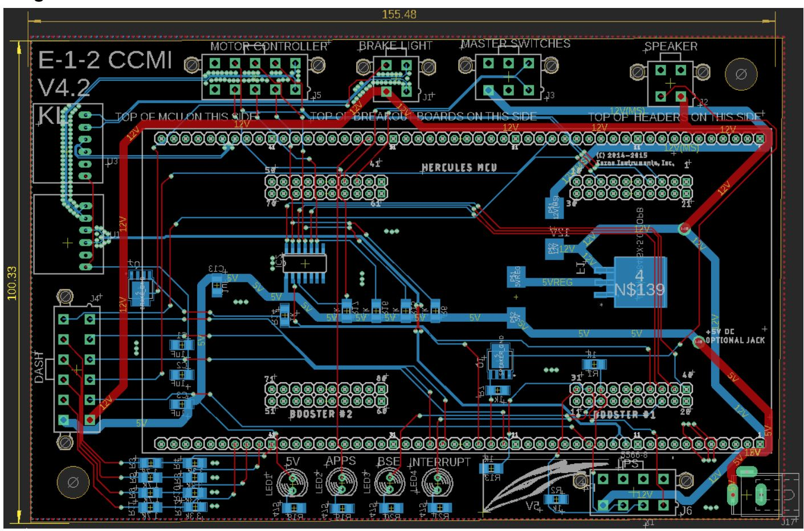

Quadcopters
I've built two quadcopters over the course of six months with two different teams. The first was a simple quadcopter that would partcipate in a competition with 38 teams to see which quadcopter can be piloted through an obstacle course the fastest.
The second one I built during my winter quarter and was more based on electronics along with programming them. Although it was also manually piloted, the color and distance detection that would lead to a specific payload (ball) being dropped from the basket was fully autonomous.
Fall Quarter Quadcopter
Chassis
Chassis Dimensions
Electronics Layout and Wiring Schematic
Wiring Schematic done in Draw.io and Electronics layout done in Solidworks Sketch.
Faulty ESC Fire
This happened TWO days before compeititon during a final test flight.
Wiring and Power Distribution was done properly (checked by lab advisors),
explosion was due to faulty motor speed controller made by manufacturer.
Final Competition (Top 5)
After repairing chassis, replacing blown ESC, rewiring electronics,
and recalibrating motors, we were able to place top 5 in the
competiton obstacle course.
Winter Quarter Quadcopter
Solidworks Mode w/ Electronics
Wiring Schematic

Electronics Testing
Tested Pixy Camera to ensure it detected blue and red objects.
Ensured that ultrasonic sensors and camera caused corresponding servos to rotate.
Arduino Code Flowchart
Ultrasonic sensors and camera module provide Arduino with values to determine color and distance.
The Arduino then checks if the values meet the given parameters: The object is either blue or red AND
it is within 120cm.
Arduino Code Snippet
Initial Problem: If both colored paper sheets where in the same camera frame,
we only want it to drop one ball, which would be that of the same color as the closest sheet.
I fixed this by saving the color signature of the block(object) first detected by the camera,
since that would be the closest.
Final Drone
Competition was cancelled due to COVID. However, we still fully completed the quadcopter.
UCI FSAE Electric Racecar - Electronics Subteam
The Central Control Module Interface (CCMI) is the PCB intended to provide
a platform for our main Hercules Microcontroller. The CCM is the central computing
unit for the car, it takes in safety information signals from the battery box, sends data to dashboard
to inform driver of any faults or high voltages. It controls the fans to cool off battery, sends signals
to motor controllers, and controls Ready to Drive Sound (sound from a speaker that indicates car is safe to drive).
CCMI Schematic
CCMI PCB Layout

Manufactured CCMI PCB
CCMI Enclosure and Wiring Harness
CCMI Protyping
PCB Simulation and Verification
Tractive System Active Light (TSAL) - Safety device to indicate to engineers if there is High Voltage (HV) present in the tractive system. The PCB LEDs turn green if the voltage is under 60V (safe) and turns red when above 60V (unsafe).
Tractive System Active Light (TSAL) - Completed Protoype Circuit
Tractive System Active Light (TSAL) - PCB Verification Successful (Recieved 12 V which is under 60V, Green LED on.)
Logic Power Stage (LPS) - Contains Brake Systems Plausibility Device (BSPD) and Safety Shutdown Circuit. It monitors current draw from battery and brake pressure, if brakes fail (brake pressure is high and high amount of current is still being drawn for over 0.5 s), the car automatically begins to drastically slow down. The shutdown circuit shuts down the car if it recieved fault signals from the insulation monitorying device (IMD) along with battery temperature sensors.
Charging Shutdown Circuit (CSC) - Ensures safe charging of high voltage batteries and shuts down battery charging if it detects an IMD fault or Accumulator Management System (AMS) fault.
Maze Solving Robot
During summer quarantine, I gathered parts from past IEEE workshops to build a robot that uses bump switches to navigate obstacles such as walls and corners. I used a Texas Instruments MSP432P401R LaunchPad as the microcontroller for the robot.
Manufacturing

Soldered pins to line IR Sensor used to follow colored path (black electric tape)

Soldered Components and additonal pins to microcontrollers, crimped wires and soldered them to bump switches and motors, covered connections in shrink tube.

Mounted Motor Driver and Power Distribution Board (Black) to Chassis.
Motor Control Code Snippet
Contains motor initialization (goes forward and slighty turns overtime
as soon as its powered on). Loop contains all six if-else statements, one
for each motor (only 2 if-else statements are pictured above). Programmed
so that the closer the bump switch is to the center, the longer the delay would be,
allowing for a larger turn. This is because if the bump switches in the middle
were pushed, their is a wall directly in front of the robot, so it would need to turn more.
Final Build